Postharvest
This essay shows the postharvest behavior of the fruits at temperatures of 5 and 9 °C for different physical and chemical variables.
Introducción
Las pérdidas de frutas y hortalizas entre los momentos de cosecha y su potencial consumo son considerables. Puntualmente, las frutas frescas son tejidos vivos que adquieren vida independiente una vez cosechados. Minimizar éstas pérdidas depende de factores biológicos como la especie o variedad, el órgano vegetal, patologías asociadas, momento de cosecha, contenido relativo de humedad y en el caso puntual de los frutos si son climatéricos o no, entre muchos otros. La disminución o letargo de procesos fisiológicos, físicos y patológicos son fundamentales para lograr una mayor vida útil. El conocimiento de la producción de etileno y dióxido de carbono mediante la respiración en poscosecha es fundamental para determinar si los frutos presentan un comportamiento climatérico o no. Mediante la respiración, utilizan sus reservas metabólicas acumuladas durante la fase de crecimiento y maduración y pueden dar continuidad a los procesos de síntesis necesarios para su sobrevivencia. Sin embargo, la pérdida de estas reservas alimenticias también significa el aceleramiento de la senescencia y la disminución de la vida útil del producto. A su vez, factores ambientales tales como la temperatura, humedad o radiación combinados con los factores mencionados determinan el mejor o peor estado de conservación. Así, la disminución de la temperatura del producto y la reducción del tiempo en el cual se alcanza la temperatura óptima de almacenamiento juegan un papel esencial, pues son los factores que más influyen en la disminución de estos procesos que afectan las reacciones y composición química, así como la integridad física.
El fruto de H. edulis tendría un gran potencial como alimento funcional por su perfil composicional y destacado valor nutritivo muy favorable para la salud, Sin embargo, existen escasos antecedentes en cuanto al comportamiento en poscosecha de los frutos y formas de almacenamiento, conocimientos imprescindibles al momento de pensar en el uso de estos frutos sea como productos frescos como en productos elaborados.
A partir de la aplicación de tecnologías postcosecha es posible describir, comprender y ejecutar tratamientos que eviten pérdidas mayores y preserven la calidad del perfil nutricional y los aspectos sensoriales deseados para ser aceptados por los consumidores.
Objetivos
Evaluar las características físicas de los frutos en diferentes tiempos y condiciones de almacenamiento.
Evaluar las características químicas de los frutos en diferentes tiempos y condiciones de almacenamiento: sólidos solubles-acidez titulable, etileno.
Definir el método de conservación más adecuado para estos frutos y su caracterización como alimento funcional.
Análisis completo del ensayo:
PESO
Estadística descriptiva
Boxplot con outliers
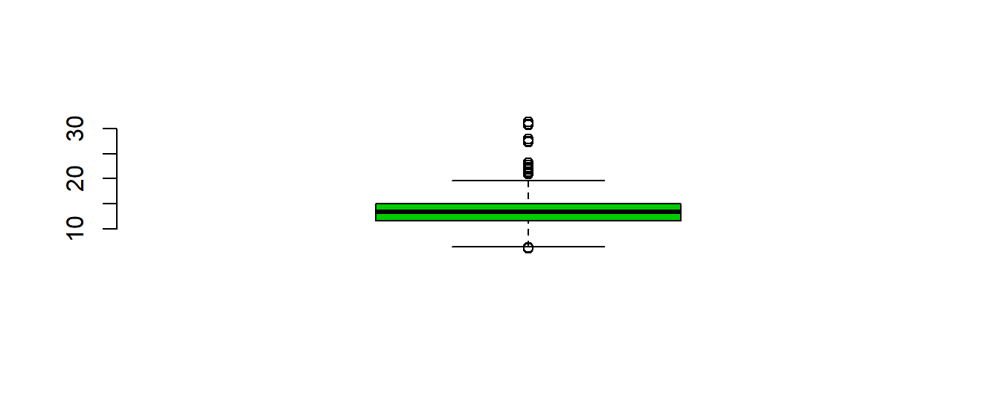
Boxplot

Con desvío estandar

Gráfico de perfiles


Comportamiento por fruto

Estadística inferencial PESO
Correlación en el tiempo

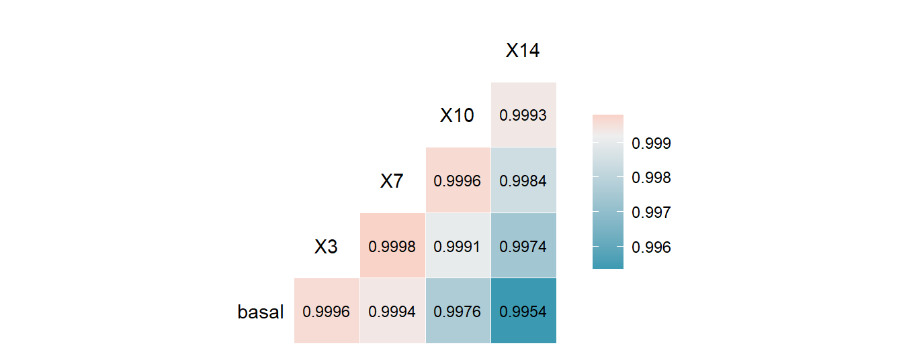
Seleccion de modelos por AIC
## df AIC
## m1 12 134.14676
## m2 16 95.37375
## m3 12 -144.43088
## m4 16 -172.28266
## m5 21 -280.12657
## m6 12 134.14676El modelo m5 es el mejor en términos de AIC
Supuestos


Covarianza marginal
## Marginal variance covariance matrix
## [,1] [,2] [,3] [,4] [,5]
## [1,] 6.8379 6.8326 6.8276 6.8154 6.7964
## [2,] 6.8326 6.8379 6.8362 6.8303 6.8169
## [3,] 6.8276 6.8362 6.8379 6.8345 6.8241
## [4,] 6.8154 6.8303 6.8345 6.8379 6.8325
## [5,] 6.7964 6.8169 6.8241 6.8325 6.8379
## Standard Deviations: 2.6149 2.6149 2.6149 2.6149 2.6149Anova tipo III
## Analysis of Deviance Table (Type III tests)
##
## Response: PESO
## Df Chisq Pr(>Chisq)
## (Intercept) 1 1411.154 <2e-16 ***
## TEMP 1 0.619 0.4314
## DIA 4 725.442 <2e-16 ***
## TEMP:DIA 4 178.099 <2e-16 ***
## ---
## Signif. codes: 0 '***' 0.001 '**' 0.01 '*' 0.05 '.' 0.1 ' ' 1Hay interacción Tiempo * Temperatura. Se hacen comparaciones de interacción y se analízan los efectos simples.
Comparaciones de interacción
## contrast estimate SE df t.ratio p.value
## 5 0 - 9 0 0.4227 0.53732 402 0.787 0.9987
## 5 0 - 5 3 0.2452 0.01459 402 16.806 <.0001
## 5 0 - 9 3 0.7606 0.53732 402 1.415 0.9220
## 5 0 - 5 7 0.4374 0.02036 402 21.483 <.0001
## 5 0 - 9 7 0.8552 0.53732 402 1.592 0.8518
## 5 0 - 5 10 0.7052 0.03005 402 23.463 <.0001
## 5 0 - 9 10 1.1235 0.53737 402 2.091 0.5352
## 5 0 - 5 14 0.9795 0.04104 402 23.868 <.0001
## 5 0 - 9 14 1.3460 0.53760 402 2.504 0.2695
## 9 0 - 5 3 -0.1775 0.53732 402 -0.330 1.0000
## 9 0 - 9 3 0.3378 0.01538 402 21.963 <.0001
## 9 0 - 5 7 0.0147 0.53732 402 0.027 1.0000
## 9 0 - 9 7 0.4324 0.02146 402 20.148 <.0001
## 9 0 - 5 10 0.2824 0.53732 402 0.526 1.0000
## 9 0 - 9 10 0.7008 0.03259 402 21.501 <.0001
## 9 0 - 5 14 0.5567 0.53734 402 1.036 0.9899
## 9 0 - 9 14 0.9233 0.04629 402 19.948 <.0001
## 5 3 - 9 3 0.5153 0.53732 402 0.959 0.9942
## 5 3 - 5 7 0.1922 0.00835 402 23.024 <.0001
## 5 3 - 9 7 0.6099 0.53732 402 1.135 0.9808
## 5 3 - 5 10 0.4599 0.01751 402 26.262 <.0001
## 5 3 - 9 10 0.8783 0.53737 402 1.634 0.8306
## 5 3 - 5 14 0.7342 0.02935 402 25.012 <.0001
## 5 3 - 9 14 1.1008 0.53760 402 2.048 0.5658
## 9 3 - 5 7 -0.3232 0.53732 402 -0.601 0.9999
## 9 3 - 9 7 0.0946 0.00880 402 10.753 <.0001
## 9 3 - 5 10 -0.0554 0.53732 402 -0.103 1.0000
## 9 3 - 9 10 0.3629 0.01999 402 18.160 <.0001
## 9 3 - 5 14 0.2189 0.53734 402 0.407 1.0000
## 9 3 - 9 14 0.5855 0.03505 402 16.702 <.0001
## 5 7 - 9 7 0.4178 0.53732 402 0.777 0.9989
## 5 7 - 5 10 0.2678 0.01172 402 22.852 <.0001
## 5 7 - 9 10 0.6861 0.53737 402 1.277 0.9583
## 5 7 - 5 14 0.5421 0.02402 402 22.570 <.0001
## 5 7 - 9 14 0.9086 0.53760 402 1.690 0.8006
## 9 7 - 5 10 -0.1500 0.53732 402 -0.279 1.0000
## 9 7 - 9 10 0.2683 0.01453 402 18.465 <.0001
## 9 7 - 5 14 0.1243 0.53734 402 0.231 1.0000
## 9 7 - 9 14 0.4909 0.03020 402 16.252 <.0001
## 5 10 - 9 10 0.4183 0.53737 402 0.778 0.9988
## 5 10 - 5 14 0.2743 0.01545 402 17.753 <.0001
## 5 10 - 9 14 0.6409 0.53760 402 1.192 0.9733
## 9 10 - 5 14 -0.1440 0.53739 402 -0.268 1.0000
## 9 10 - 9 14 0.2225 0.02056 402 10.822 <.0001
## 5 14 - 9 14 0.3666 0.53762 402 0.682 0.9996
##
## Degrees-of-freedom method: df.error
## P value adjustment: tukey method for comparing a family of 10 estimatesLas diferencias significativas están dadas por los días.
Plot SE del modelo

Efectos simples
## DIA = 0:
## contrast estimate SE df t.ratio p.value
## 5 - 9 0.423 0.537 402 0.787 0.4319
##
## DIA = 3:
## contrast estimate SE df t.ratio p.value
## 5 - 9 0.515 0.537 402 0.959 0.3381
##
## DIA = 7:
## contrast estimate SE df t.ratio p.value
## 5 - 9 0.418 0.537 402 0.777 0.4373
##
## DIA = 10:
## contrast estimate SE df t.ratio p.value
## 5 - 9 0.418 0.537 402 0.778 0.4367
##
## DIA = 14:
## contrast estimate SE df t.ratio p.value
## 5 - 9 0.367 0.538 402 0.682 0.4957
##
## Degrees-of-freedom method: df.error
Conclusión PESO
NO se encontraron diferencias significativas entre temperaturas.
COLOR (L)
Estadística descriptiva
Boxplot con outliers
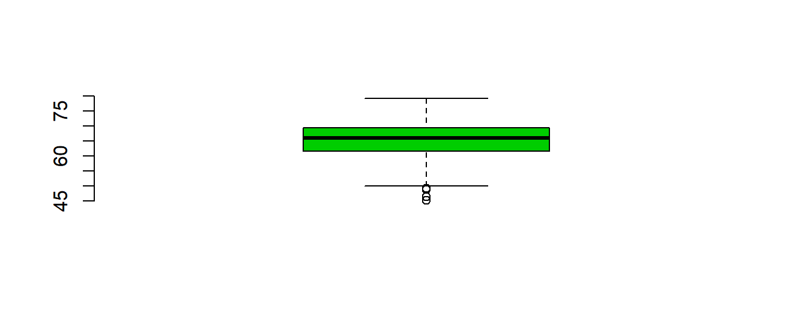
Boxplot

Con desvío estandar

Gráfico de perfiles


Comportamiento por fruto

Estadística inferencial L
Correlación en el tiempo

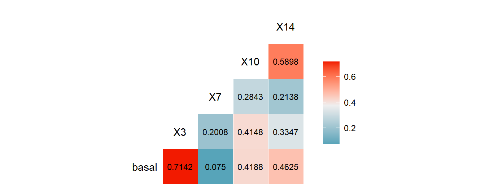
Seleccion de modelos por AIC
## df AIC
## m1 12 2510.282
## m2 16 2514.870
## m3 12 2511.893
## m4 16 2512.300
## m5 21 2474.974
## m6 12 2510.282El modelo m5 es el mejor en términos de AIC
Supuestos


Covarianza marginal
## Marginal variance covariance matrix
## [,1] [,2] [,3] [,4] [,5]
## [1,] 21.3650 14.9480 1.7303 8.8909 8.1131
## [2,] 14.9480 21.3650 2.5003 8.8632 6.4293
## [3,] 1.7303 2.5003 21.3650 7.4134 4.3699
## [4,] 8.8909 8.8632 7.4134 21.3650 11.9690
## [5,] 8.1131 6.4293 4.3699 11.9690 21.3650
## Standard Deviations: 4.6222 4.6222 4.6222 4.6222 4.6222Anova tipo III
## Analysis of Deviance Table (Type III tests)
##
## Response: L
## Df Chisq Pr(>Chisq)
## (Intercept) 1 9140.9844 < 2.2e-16 ***
## TEMP 1 0.2096 0.647072
## DIA 4 90.3347 < 2.2e-16 ***
## TEMP:DIA 4 17.0244 0.001912 **
## ---
## Signif. codes: 0 '***' 0.001 '**' 0.01 '*' 0.05 '.' 0.1 ' ' 1Hay interacción Tiempo * Temperatura. Se hacen comparaciones de interacción y se analízan los efectos simples.
Comparaciones de interacción
## contrast estimate SE df t.ratio p.value
## 5 0 - 9 0 0.4252 0.929 415 0.458 1.0000
## 5 0 - 5 3 1.0956 0.510 415 2.148 0.4949
## 5 0 - 9 3 -0.0665 0.925 415 -0.072 1.0000
## 5 0 - 5 7 -6.6121 0.877 415 -7.541 <.0001
## 5 0 - 9 7 -8.0839 0.921 415 -8.781 <.0001
## 5 0 - 5 10 -3.9249 0.717 415 -5.476 <.0001
## 5 0 - 9 10 -7.8403 1.059 415 -7.403 <.0001
## 5 0 - 5 14 -3.9143 0.760 415 -5.150 <.0001
## 5 0 - 9 14 -5.1220 1.117 415 -4.587 0.0003
## 9 0 - 5 3 0.6704 0.925 415 0.725 0.9993
## 9 0 - 9 3 -0.4917 0.516 415 -0.953 0.9945
## 9 0 - 5 7 -7.0373 0.925 415 -7.607 <.0001
## 9 0 - 9 7 -8.5091 0.878 415 -9.696 <.0001
## 9 0 - 5 10 -4.3501 0.934 415 -4.656 0.0002
## 9 0 - 9 10 -8.2654 0.885 415 -9.336 <.0001
## 9 0 - 5 14 -4.3395 0.953 415 -4.554 0.0003
## 9 0 - 9 14 -5.5471 0.969 415 -5.723 <.0001
## 5 3 - 9 3 -1.1621 0.921 415 -1.262 0.9614
## 5 3 - 5 7 -7.7078 0.852 415 -9.045 <.0001
## 5 3 - 9 7 -9.1795 0.917 415 -10.015 <.0001
## 5 3 - 5 10 -5.0205 0.713 415 -7.041 <.0001
## 5 3 - 9 10 -8.9359 1.056 415 -8.465 <.0001
## 5 3 - 5 14 -5.0099 0.797 415 -6.284 <.0001
## 5 3 - 9 14 -6.2176 1.113 415 -5.585 <.0001
## 9 3 - 5 7 -6.5457 0.921 415 -7.104 <.0001
## 9 3 - 9 7 -8.0174 0.853 415 -9.401 <.0001
## 9 3 - 5 10 -3.8584 0.931 415 -4.146 0.0017
## 9 3 - 9 10 -7.7738 0.882 415 -8.814 <.0001
## 9 3 - 5 14 -3.8478 0.949 415 -4.053 0.0024
## 9 3 - 9 14 -5.0555 1.001 415 -5.053 <.0001
## 5 7 - 9 7 -1.4717 0.917 415 -1.605 0.8453
## 5 7 - 5 10 2.6872 0.750 415 3.585 0.0137
## 5 7 - 9 10 -1.2281 1.056 415 -1.163 0.9774
## 5 7 - 5 14 2.6978 0.844 415 3.196 0.0479
## 5 7 - 9 14 1.4902 1.114 415 1.338 0.9442
## 9 7 - 5 10 4.1590 0.926 415 4.491 0.0004
## 9 7 - 9 10 0.2436 0.895 415 0.272 1.0000
## 9 7 - 5 14 4.1696 0.945 415 4.412 0.0005
## 9 7 - 9 14 2.9619 1.029 415 2.879 0.1149
## 5 10 - 9 10 -3.9154 1.064 415 -3.680 0.0098
## 5 10 - 5 14 0.0106 0.655 415 0.016 1.0000
## 5 10 - 9 14 -1.1971 1.121 415 -1.068 0.9875
## 9 10 - 5 14 3.9259 1.080 415 3.634 0.0116
## 9 10 - 9 14 2.7183 0.891 415 3.050 0.0728
## 5 14 - 9 14 -1.2076 1.137 415 -1.062 0.9879
##
## Degrees-of-freedom method: df.error
## P value adjustment: tukey method for comparing a family of 10 estimatesPlot SE del modelo

Efectos simples
## DIA = 0:
## contrast estimate SE df t.ratio p.value
## 5 - 9 0.425 0.929 415 0.458 0.6473
##
## DIA = 3:
## contrast estimate SE df t.ratio p.value
## 5 - 9 -1.162 0.921 415 -1.262 0.2077
##
## DIA = 7:
## contrast estimate SE df t.ratio p.value
## 5 - 9 -1.472 0.917 415 -1.605 0.1093
##
## DIA = 10:
## contrast estimate SE df t.ratio p.value
## 5 - 9 -3.915 1.064 415 -3.680 0.0003
##
## DIA = 14:
## contrast estimate SE df t.ratio p.value
## 5 - 9 -1.208 1.137 415 -1.062 0.2887
##
## Degrees-of-freedom method: df.error
Conclusión L
Sólo a los 10 días hubo diferencias significativas entre temperaturas.
COLOR (a)
Estadística descriptiva
Boxplot con outliers
 No se detectan outliers
No se detectan outliers
Boxplot

Con desvío estandar

Gráfico de perfiles
 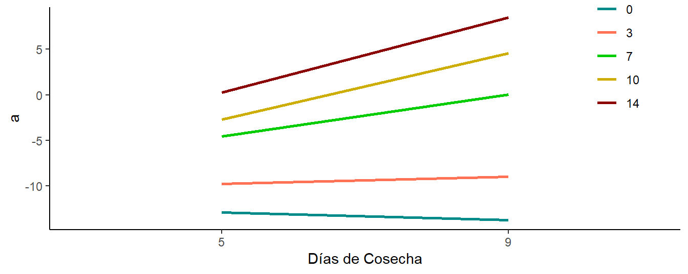
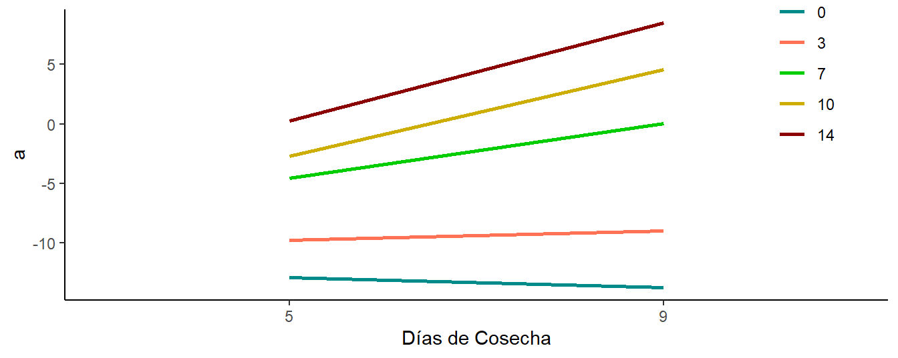
Comportamiento por fruto

Estadística inferencial a
Correlación en el tiempo
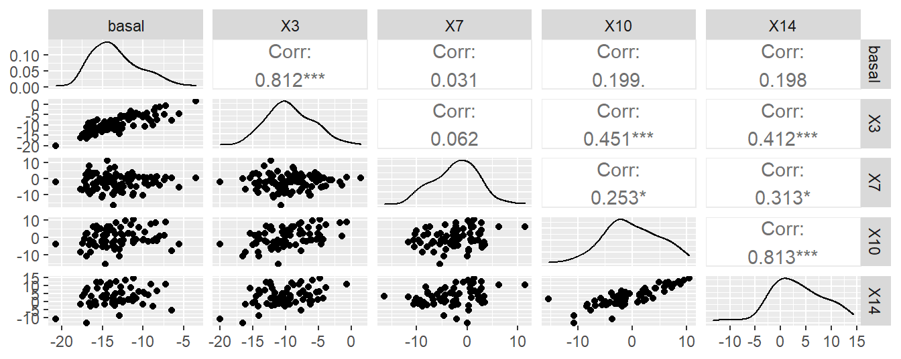
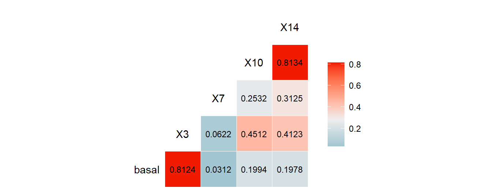
Seleccion de modelos por AIC
## df AIC
## m1 12 2372.186
## m2 16 2358.446
## m3 12 2390.281
## m4 16 2370.496
## m5 21 2249.605El modelo m5 es el mejor en términos de AIC
Supuestos
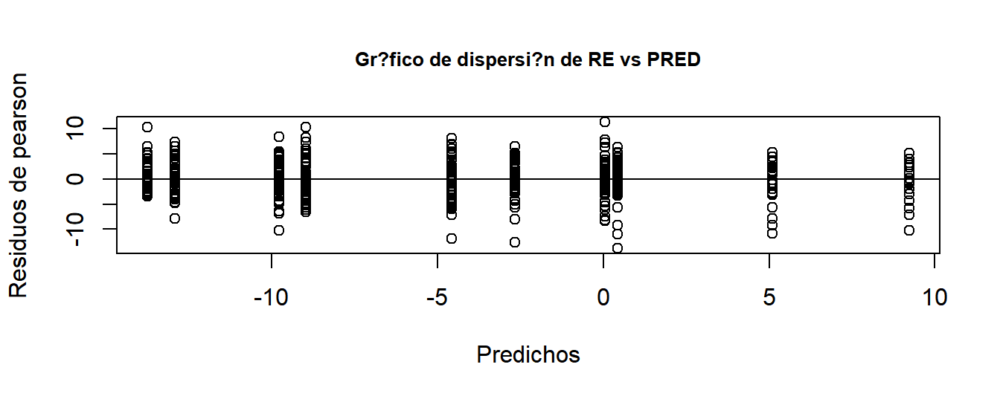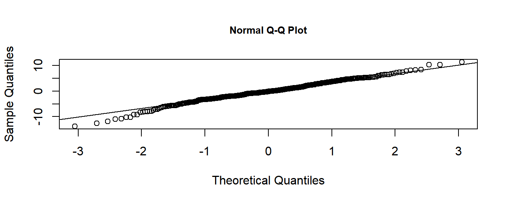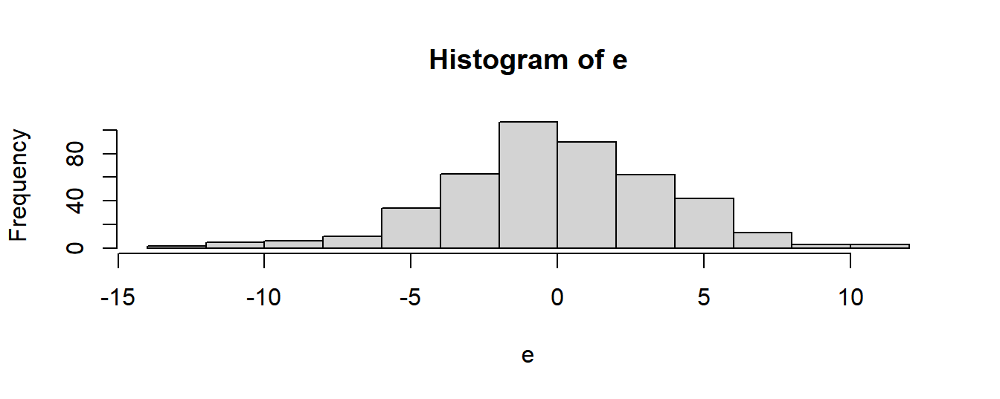
Covarianza marginal
## Marginal variance covariance matrix
## [,1] [,2] [,3] [,4] [,5]
## [1,] 14.3240 12.22400 2.22070 4.3091 4.40050
## [2,] 12.2240 14.32400 0.90675 7.1619 6.85190
## [3,] 2.2207 0.90675 14.32400 -1.6500 -0.68112
## [4,] 4.3091 7.16190 -1.65000 14.3240 8.84850
## [5,] 4.4005 6.85190 -0.68112 8.8485 14.32400
## Standard Deviations: 3.7847 3.7847 3.7847 3.7847 3.7847Anova
## Denom. DF: 430
## numDF F-value p-value
## (Intercept) 1 205.2165 <.0001
## TEMP 1 40.3839 <.0001
## DIA 4 356.3173 <.0001
## TEMP:DIA 4 26.7291 <.0001Hay interacción Tiempo * Temperatura. Se hacen comparaciones de interacción y se analízan los efectos simples.
Comparaciones de interacción
## DIA = 0:
## contrast estimate SE df t.ratio p.value
## 5 - 9 0.824 0.757 419 1.089 0.2768
##
## DIA = 3:
## contrast estimate SE df t.ratio p.value
## 5 - 9 -0.804 0.757 419 -1.062 0.2889
##
## DIA = 7:
## contrast estimate SE df t.ratio p.value
## 5 - 9 -4.618 0.757 419 -6.101 <.0001
##
## DIA = 10:
## contrast estimate SE df t.ratio p.value
## 5 - 9 -7.762 0.872 419 -8.901 <.0001
##
## DIA = 14:
## contrast estimate SE df t.ratio p.value
## 5 - 9 -8.780 0.914 419 -9.607 <.0001
##
## Degrees-of-freedom method: df.errorPlot SE del modelo

Efectos simples
## DIA = 0:
## contrast estimate SE df t.ratio p.value
## 5 - 9 0.824 0.757 419 1.089 0.2768
##
## DIA = 3:
## contrast estimate SE df t.ratio p.value
## 5 - 9 -0.804 0.757 419 -1.062 0.2889
##
## DIA = 7:
## contrast estimate SE df t.ratio p.value
## 5 - 9 -4.618 0.757 419 -6.101 <.0001
##
## DIA = 10:
## contrast estimate SE df t.ratio p.value
## 5 - 9 -7.762 0.872 419 -8.901 <.0001
##
## DIA = 14:
## contrast estimate SE df t.ratio p.value
## 5 - 9 -8.780 0.914 419 -9.607 <.0001
##
## Degrees-of-freedom method: df.error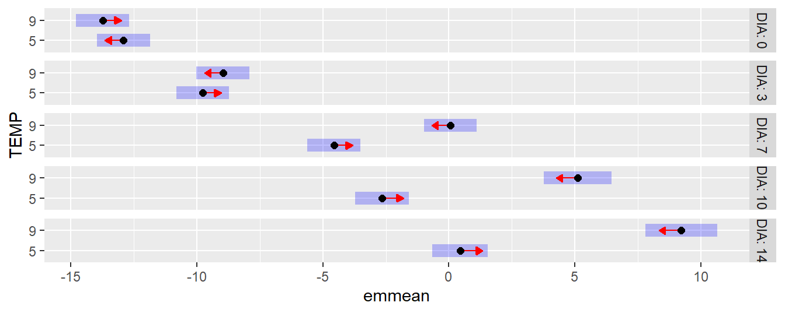
Conclusión a
A partir de los 7 días hubo diferencias significativas entre temperaturas.
COLOR (b)
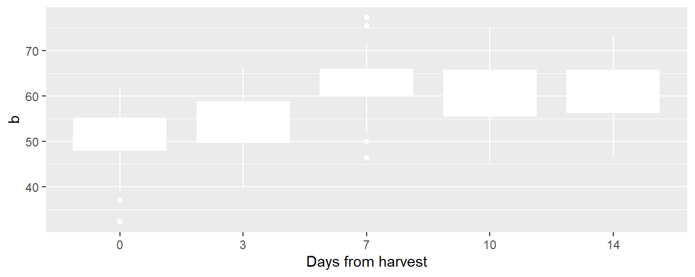
Boxplot con outliers
 No se detectan outliers
No se detectan outliers
Boxplot

Con desvío estandar

Gráfico de perfiles
 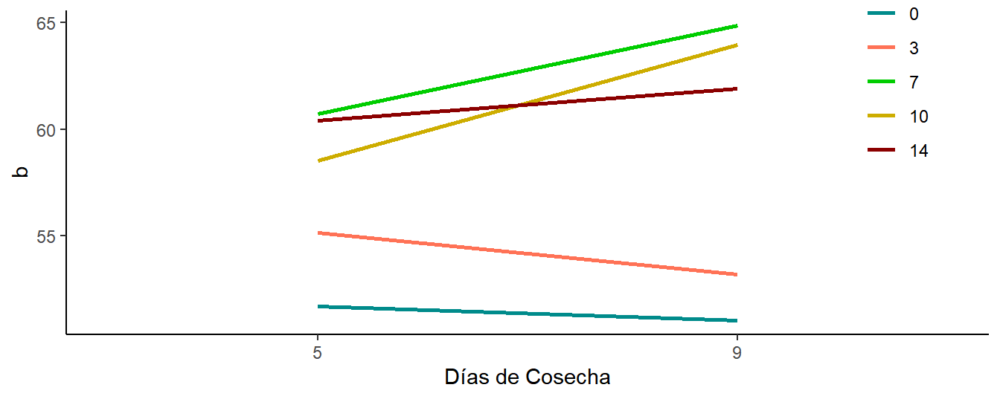
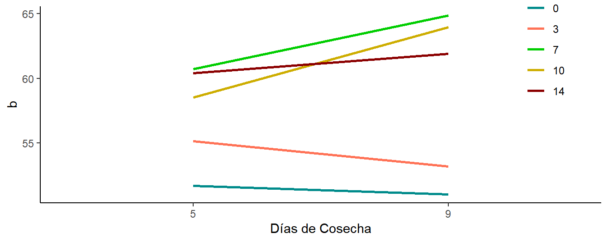
Comportamiento por fruto

Estadística inferencial b
Correlación en el tiempo
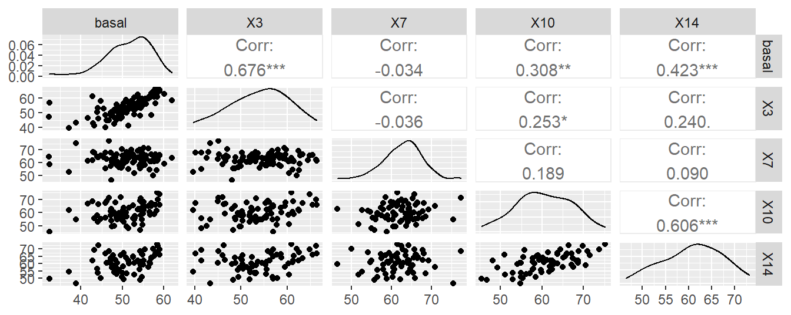
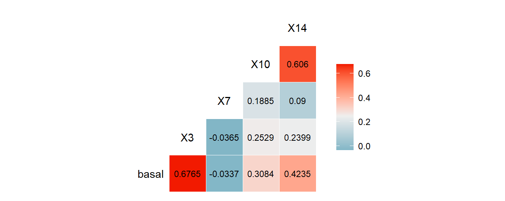
Seleccion de modelos por AIC
## df AIC
## m1 12 2736.972
## m2 16 2739.459
## m3 12 2748.094
## m4 16 2749.252
## m5 21 2697.303El modelo m5 es el mejor en términos de AIC
Supuestos
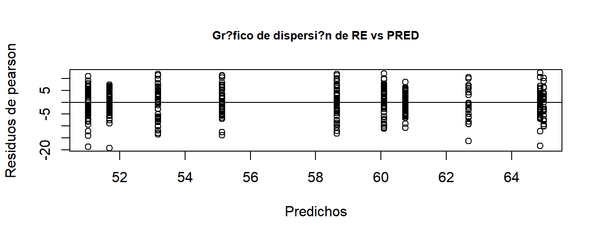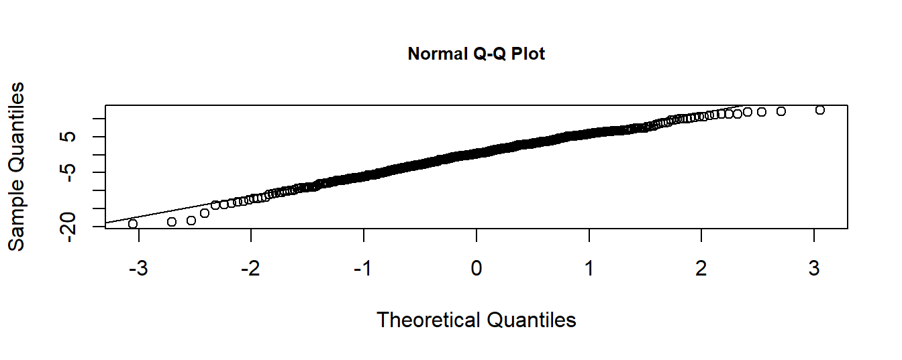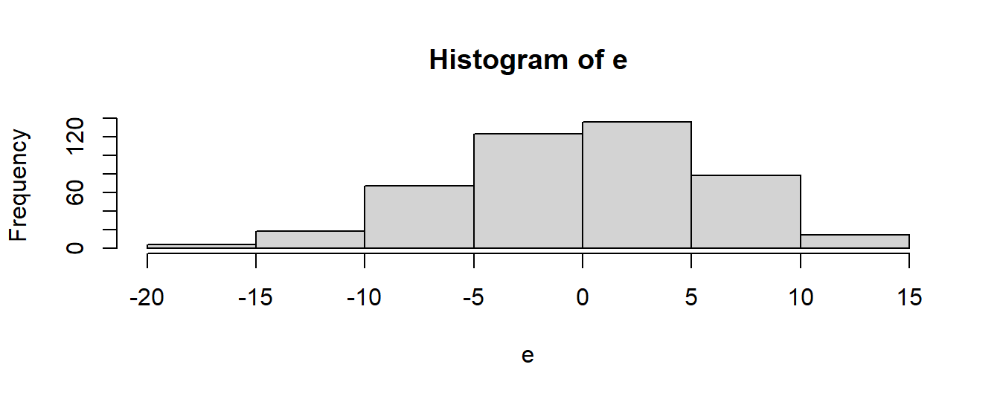
Covarianza marginal
## Marginal variance covariance matrix
## [,1] [,2] [,3] [,4] [,5]
## [1,] 32.404 21.01400 -1.10200 13.18500 13.2830
## [2,] 21.014 32.40400 0.73093 13.61100 9.5937
## [3,] -1.102 0.73093 32.40400 0.23777 2.6330
## [4,] 13.185 13.61100 0.23777 32.40400 17.6790
## [5,] 13.283 9.59370 2.63300 17.67900 32.4040
## Standard Deviations: 5.6925 5.6925 5.6925 5.6925 5.6925Anova
## Denom. DF: 430
## numDF F-value p-value
## (Intercept) 1 26669.023 <.0001
## TEMP 1 4.034 0.0452
## DIA 4 77.566 <.0001
## TEMP:DIA 4 10.130 <.0001Hay interacción Tiempo * Temperatura. Se hacen comparaciones de interacción y se analízan los efectos simples.
Comparaciones de interacción
## DIA = 0:
## contrast estimate SE df t.ratio p.value
## 5 - 9 0.654 1.14 430 0.575 0.5659
##
## DIA = 3:
## contrast estimate SE df t.ratio p.value
## 5 - 9 1.958 1.14 430 1.720 0.0862
##
## DIA = 7:
## contrast estimate SE df t.ratio p.value
## 5 - 9 -4.131 1.14 430 -3.629 0.0003
##
## DIA = 10:
## contrast estimate SE df t.ratio p.value
## 5 - 9 -6.336 1.34 430 -4.737 <.0001
##
## DIA = 14:
## contrast estimate SE df t.ratio p.value
## 5 - 9 -2.597 1.40 430 -1.853 0.0645
##
## Degrees-of-freedom method: df.errorPlot SE del modelo

Efectos simples
## DIA = 0:
## contrast estimate SE df t.ratio p.value
## 5 - 9 0.654 1.14 430 0.575 0.5659
##
## DIA = 3:
## contrast estimate SE df t.ratio p.value
## 5 - 9 1.958 1.14 430 1.720 0.0862
##
## DIA = 7:
## contrast estimate SE df t.ratio p.value
## 5 - 9 -4.131 1.14 430 -3.629 0.0003
##
## DIA = 10:
## contrast estimate SE df t.ratio p.value
## 5 - 9 -6.336 1.34 430 -4.737 <.0001
##
## DIA = 14:
## contrast estimate SE df t.ratio p.value
## 5 - 9 -2.597 1.40 430 -1.853 0.0645
##
## Degrees-of-freedom method: df.error
Conclusión b
A los 7 y 10 días hubo diferencias significativas entre temperaturas.
Tabla resumen

Pérdidas de frutos
Estadística descriptiva


ACIDEZ
pH
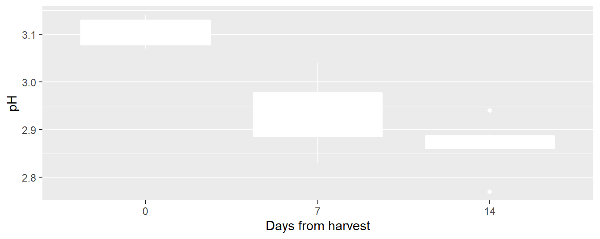
Modelo
## Call:
## aov(formula = pH ~ DIA * TEMP, data = data)
##
## Terms:
## DIA TEMP DIA:TEMP Residuals
## Sum of Squares 0.01203333 0.00333333 0.00053333 0.04086667
## Deg. of Freedom 1 1 1 8
##
## Residual standard error: 0.07147261
## Estimated effects may be unbalancedSupuestos


##
## Shapiro-Wilk normality test
##
## data: e
## W = 0.89695, p-value = 0.1449## Levene's Test for Homogeneity of Variance (center = median)
## Df F value Pr(>F)
## group 3 0.8158 0.5204
## 8Anova
## Analysis of Variance Table
##
## Response: pH
## Df Sum Sq Mean Sq F value Pr(>F)
## DIA 1 0.012033 0.0120333 2.3556 0.1634
## TEMP 1 0.003333 0.0033333 0.6525 0.4426
## DIA:TEMP 1 0.000533 0.0005333 0.1044 0.7549
## Residuals 8 0.040867 0.0051083No se encontraron diferencias significativas.
Sólidos solubles

Modelo
## Call:
## aov(formula = SS ~ DIA * TEMP, data = data)
##
## Terms:
## DIA TEMP DIA:TEMP Residuals
## Sum of Squares 0.0075000 1.5408333 0.3008333 3.1333333
## Deg. of Freedom 1 1 1 8
##
## Residual standard error: 0.6258328
## Estimated effects may be unbalancedSupuestos
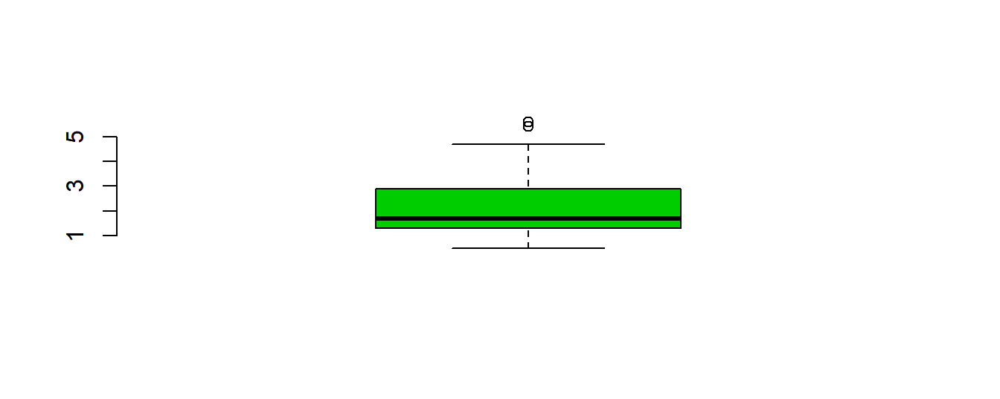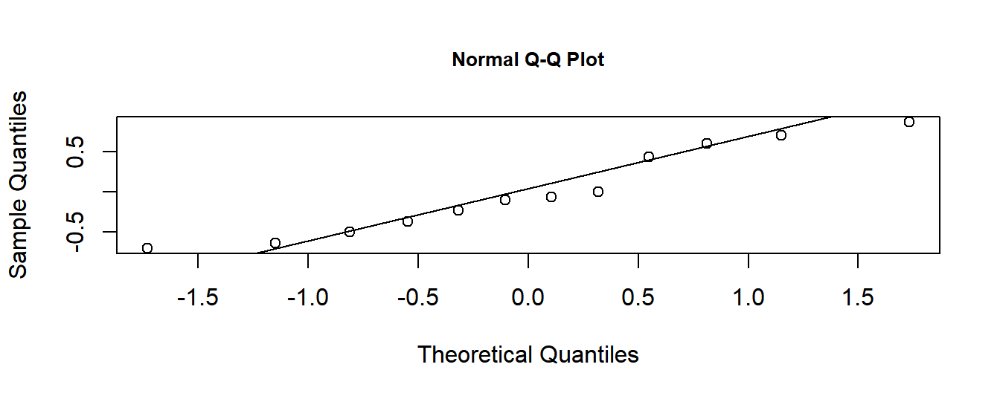
##
## Shapiro-Wilk normality test
##
## data: e
## W = 0.93185, p-value = 0.4001## Levene's Test for Homogeneity of Variance (center = median)
## Df F value Pr(>F)
## group 3 0.202 0.8921
## 8Anova
## Analysis of Variance Table
##
## Response: SS
## Df Sum Sq Mean Sq F value Pr(>F)
## DIA 1 0.00750 0.00750 0.0191 0.89336
## TEMP 1 1.54083 1.54083 3.9340 0.08261 .
## DIA:TEMP 1 0.30083 0.30083 0.7681 0.40636
## Residuals 8 3.13333 0.39167
## ---
## Signif. codes: 0 '***' 0.001 '**' 0.01 '*' 0.05 '.' 0.1 ' ' 1No se encontraron diferencias significativas.
Acidez total
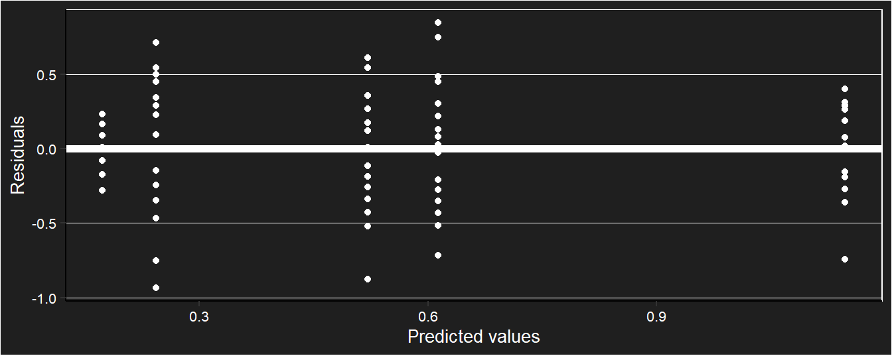
Modelo
## Call:
## aov(formula = Ac ~ DIA * TEMP, data = data)
##
## Terms:
## DIA TEMP DIA:TEMP Residuals
## Sum of Squares 0.5191680 0.0003413 0.0167253 1.0895360
## Deg. of Freedom 1 1 1 8
##
## Residual standard error: 0.369042
## Estimated effects may be unbalancedSupuestos
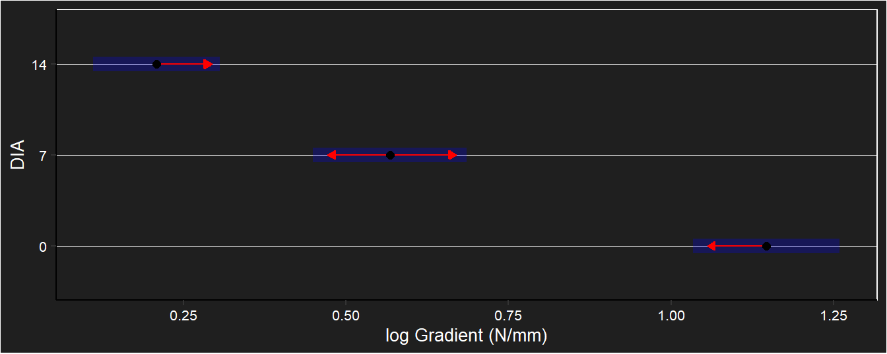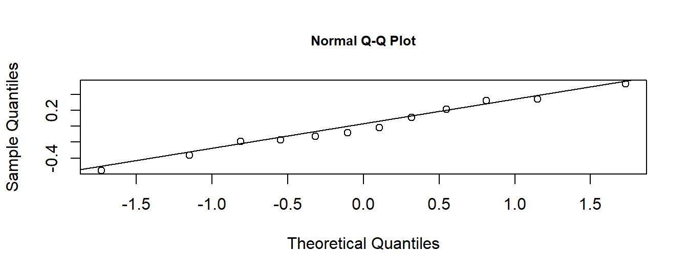
##
## Shapiro-Wilk normality test
##
## data: e
## W = 0.98217, p-value = 0.9908## Levene's Test for Homogeneity of Variance (center = median)
## Df F value Pr(>F)
## group 3 0.4232 0.7416
## 8Anova
## Analysis of Variance Table
##
## Response: Ac
## Df Sum Sq Mean Sq F value Pr(>F)
## DIA 1 0.51917 0.51917 3.8120 0.08666 .
## TEMP 1 0.00034 0.00034 0.0025 0.96130
## DIA:TEMP 1 0.01673 0.01673 0.1228 0.73506
## Residuals 8 1.08954 0.13619
## ---
## Signif. codes: 0 '***' 0.001 '**' 0.01 '*' 0.05 '.' 0.1 ' ' 1No se encontraron diferencias significativas.
Tabla resumen
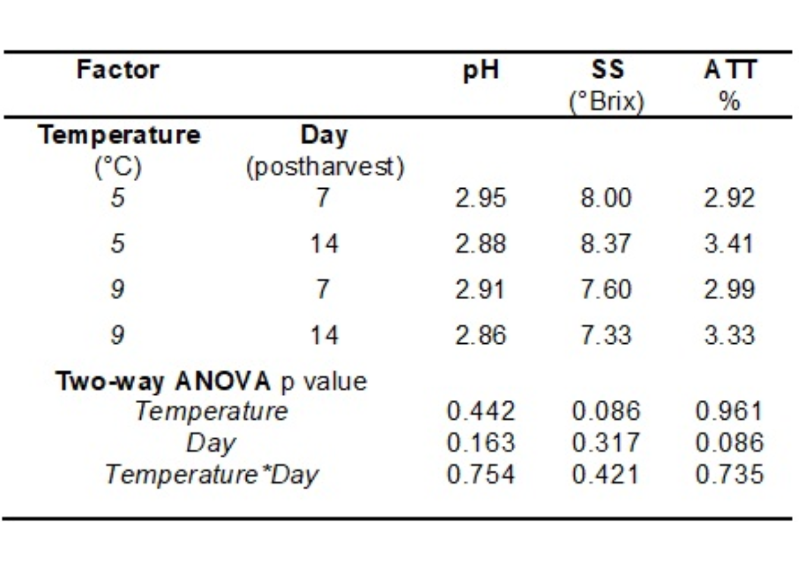
COMPRESIÓN
Fuerza (N)
Boxplot
Boxplot con outliers
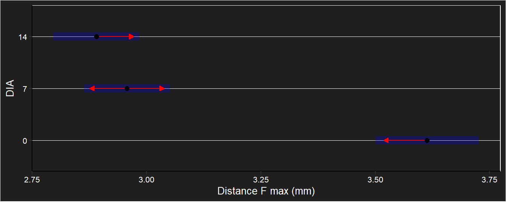
Modelo
## Generalized least squares fit by REML
## Model: FU ~ DIA * TEMP
## Data: data
## Log-restricted-likelihood: -146.3235
##
## Coefficients:
## (Intercept) DIA14 TEMP9 DIA14:TEMP9
## 5.53750000 -1.55923913 -0.29013158 -0.05955786
##
## Variance function:
## Structure: Different standard deviations per stratum
## Formula: ~1 | DIA * TEMP
## Parameter estimates:
## 14*5 14*9 7*9 7*5
## 1.0000000 0.3277117 1.1647692 1.1738285
## Degrees of freedom: 87 total; 83 residual
## Residual standard error: 1.586006Supuestos
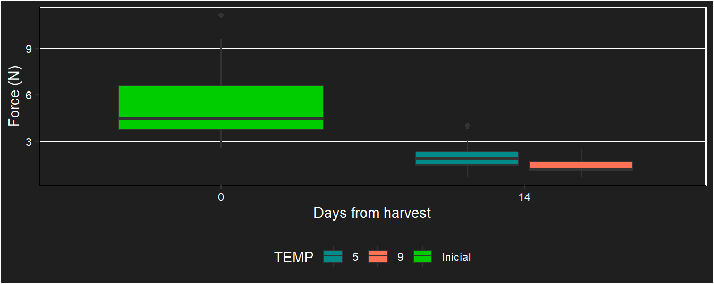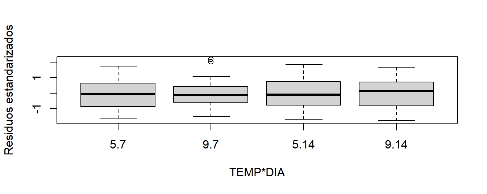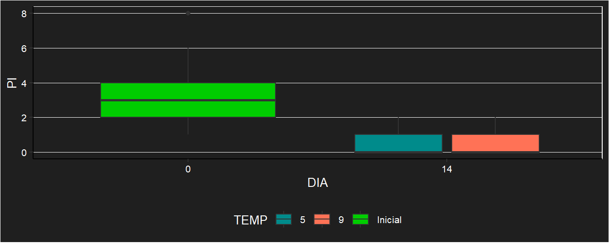
##
## Shapiro-Wilk normality test
##
## data: r5
## W = 0.96876, p-value = 0.03355Anova tipo III
## Analysis of Deviance Table (Type III tests)
##
## Response: FU
## Df Chisq Pr(>Chisq)
## (Intercept) 1 212.3341 < 2.2e-16 ***
## DIA 1 9.5801 0.001967 **
## TEMP 1 0.2598 0.610269
## DIA:TEMP 1 0.0079 0.928958
## ---
## Signif. codes: 0 '***' 0.001 '**' 0.01 '*' 0.05 '.' 0.1 ' ' 1No hay interacción. El factor DIA es significativo.
Efectos principales
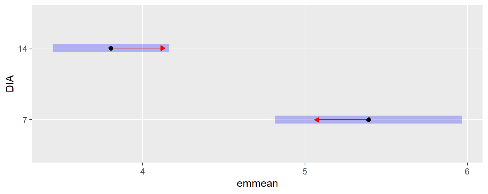
## contrast estimate SE df lower.CL upper.CL
## 7 - 14 1.59 0.334 61.3 0.921 2.26
##
## Results are averaged over the levels of: TEMP
## Degrees-of-freedom method: satterthwaite
## Confidence level used: 0.95Conclusión Fuerza
Sólo se encontró diferencia en el efecto principal para el factor tiempo.
Gradiente (N/mm)
Boxplot

Boxplot con outliers

Modelo
## Generalized least squares fit by REML
## Model: GR ~ DIA * TEMP
## Data: data
## Log-restricted-likelihood: -48.01665
##
## Coefficients:
## (Intercept) DIA14 TEMP9 DIA14:TEMP9
## 1.7227272727 -0.3357707510 -0.0005050505 -0.1864514712
##
## Variance function:
## Structure: Different standard deviations per stratum
## Formula: ~1 | DIA * TEMP
## Parameter estimates:
## 14*5 14*9 7*9 7*5
## 1.000000 0.291187 1.020717 1.001489
## Degrees of freedom: 84 total; 80 residual
## Residual standard error: 0.5537511Supuestos

 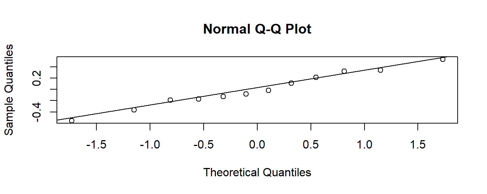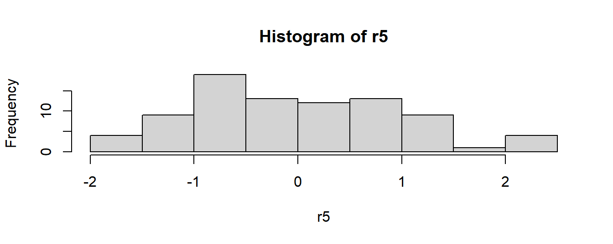
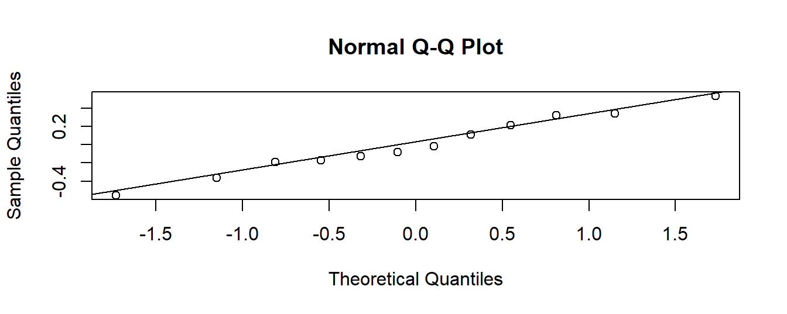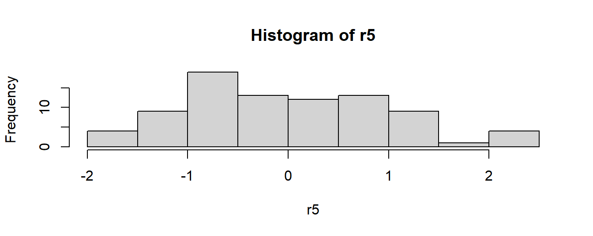
##
## Shapiro-Wilk normality test
##
## data: r5
## W = 0.97835, p-value = 0.1689Anova tipo III
## Analysis of Deviance Table (Type III tests)
##
## Response: GR
## Df Chisq Pr(>Chisq)
## (Intercept) 1 212.2923 < 2e-16 ***
## DIA 1 4.1279 0.04218 *
## TEMP 1 0.0000 0.99774
## DIA:TEMP 1 0.7509 0.38620
## ---
## Signif. codes: 0 '***' 0.001 '**' 0.01 '*' 0.05 '.' 0.1 ' ' 1No hay interacción. El factor DIA es significativo.
Efectos principales

## contrast estimate SE df lower.CL upper.CL
## 7 - 14 0.429 0.108 59.7 0.214 0.644
##
## Results are averaged over the levels of: TEMP
## Degrees-of-freedom method: satterthwaite
## Confidence level used: 0.95Conclusión Gradiente
Sólo se encontró diferencia en el efecto principal para el factor tiempo.
Distance F max (mm)
Boxplot

Boxplot con outliers
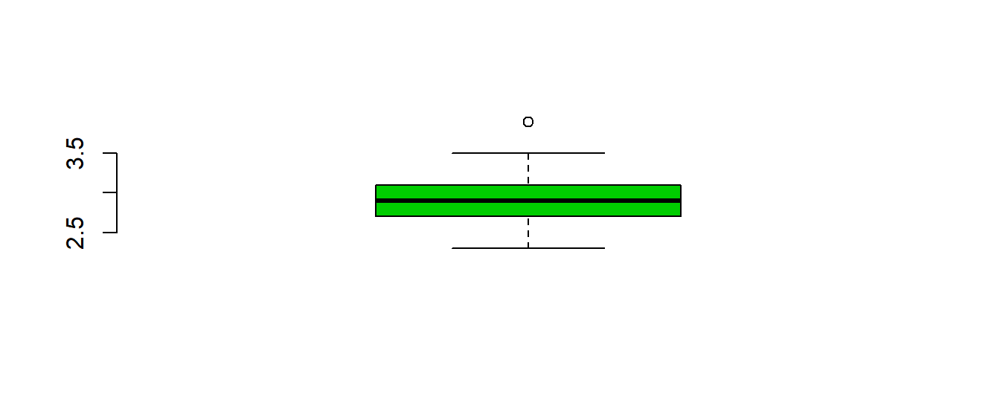
Modelo
## Call:
## aov(formula = DI ~ DIA * TEMP, data = data)
##
## Terms:
## DIA TEMP DIA:TEMP Residuals
## Sum of Squares 0.025568 0.027604 0.356437 5.819368
## Deg. of Freedom 1 1 1 84
##
## Residual standard error: 0.2632075
## Estimated effects may be unbalancedSupuestos
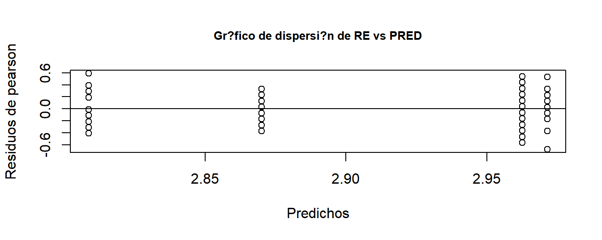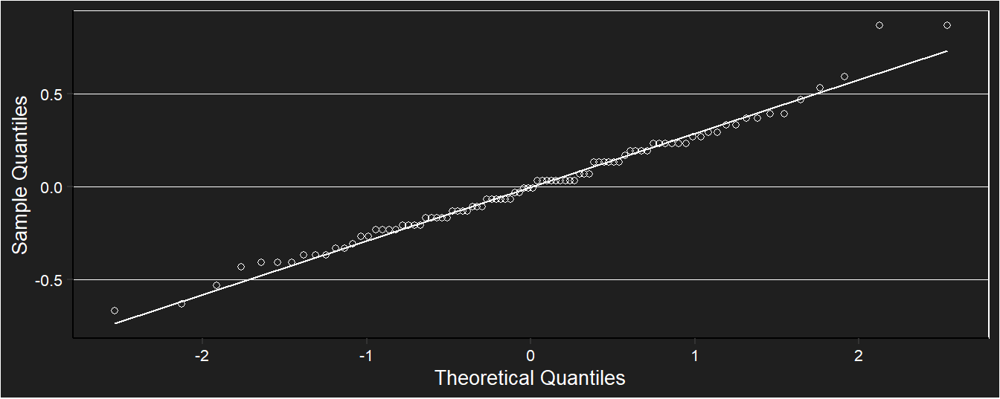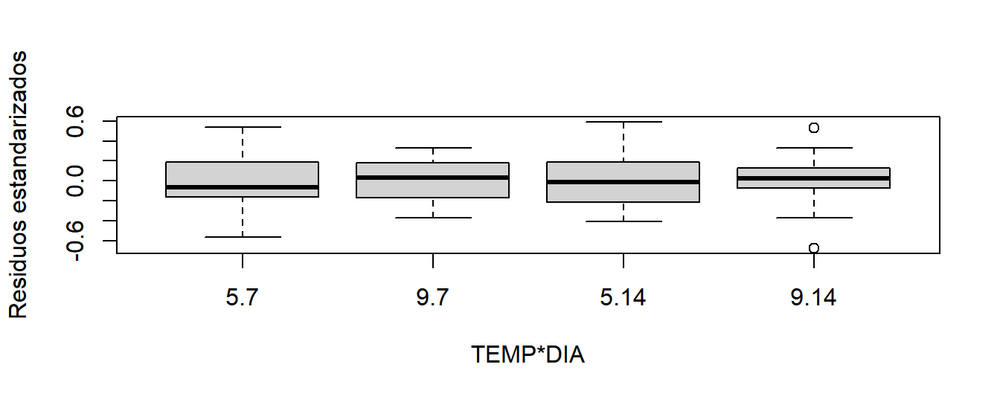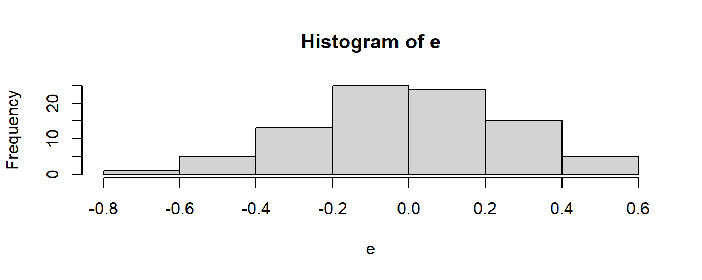
##
## Shapiro-Wilk normality test
##
## data: e
## W = 0.9922, p-value = 0.8858## Levene's Test for Homogeneity of Variance (center = median)
## Df F value Pr(>F)
## group 3 1.0942 0.3562
## 84Anova
## Analysis of Variance Table
##
## Response: DI
## Df Sum Sq Mean Sq F value Pr(>F)
## DIA 1 0.0256 0.02557 0.3691 0.54515
## TEMP 1 0.0276 0.02760 0.3985 0.52960
## DIA:TEMP 1 0.3564 0.35644 5.1450 0.02588 *
## Residuals 84 5.8194 0.06928
## ---
## Signif. codes: 0 '***' 0.001 '**' 0.01 '*' 0.05 '.' 0.1 ' ' 1Interacción significativa.
Comparaciones de interacción
## DIA = 7:
## contrast estimate SE df t.ratio p.value
## 5 - 9 0.0925 0.0797 84 1.161 0.2490
##
## DIA = 14:
## contrast estimate SE df t.ratio p.value
## 5 - 9 -0.1627 0.0794 84 -2.048 0.0436Gráfico con SE del modelo

Efectos simples
## DIA = 7:
## contrast estimate SE df t.ratio p.value
## 5 - 9 0.0925 0.0797 84 1.161 0.2490
##
## DIA = 14:
## contrast estimate SE df t.ratio p.value
## 5 - 9 -0.1627 0.0794 84 -2.048 0.0436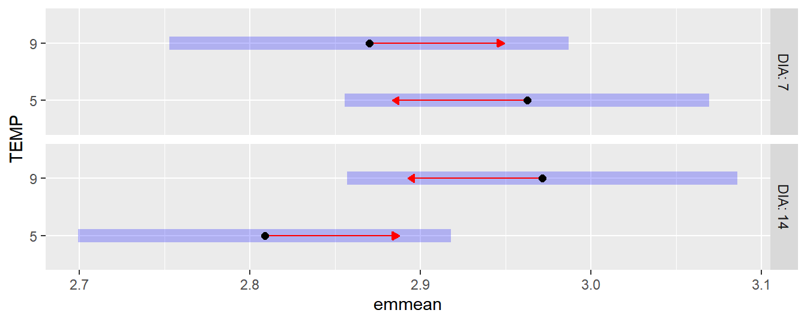
Conclusión Distance F max
A los 14 días se encontraron diferencias significativas entre temperaturas.
Tabla resumen
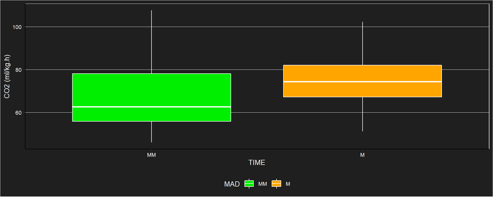
PUNCIÓN
 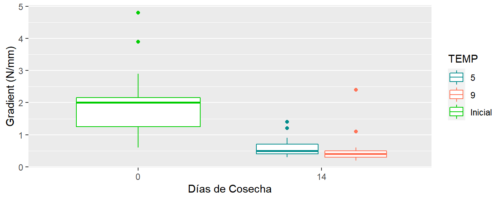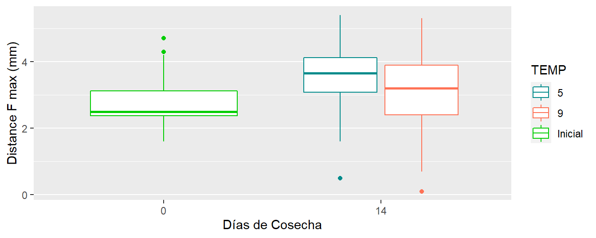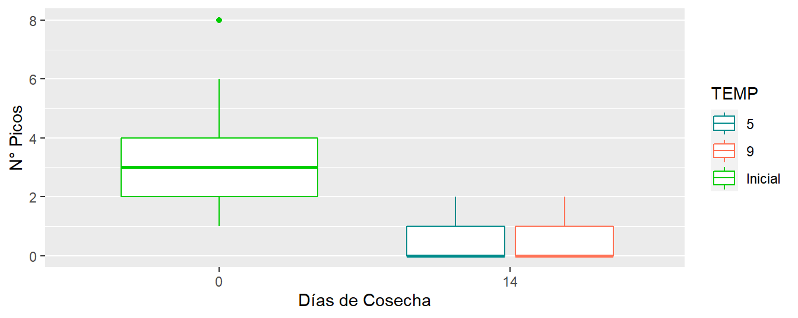
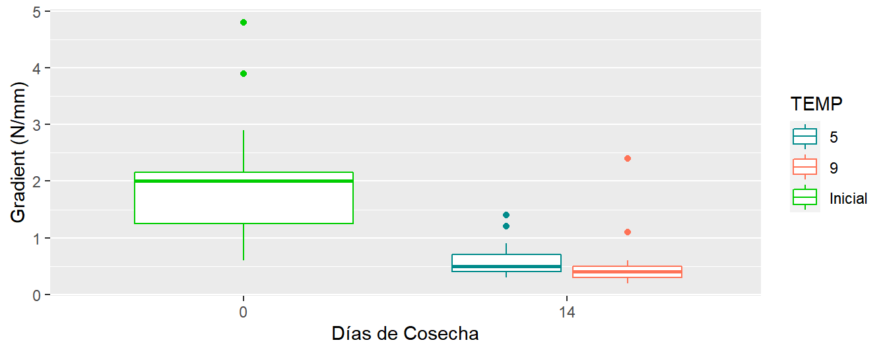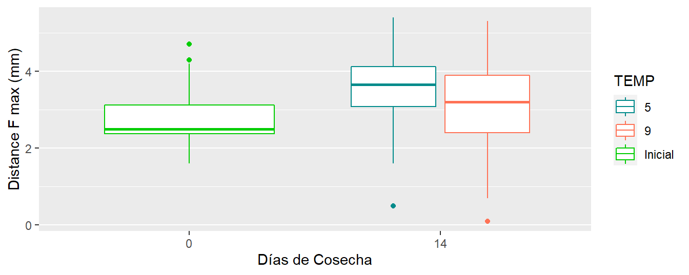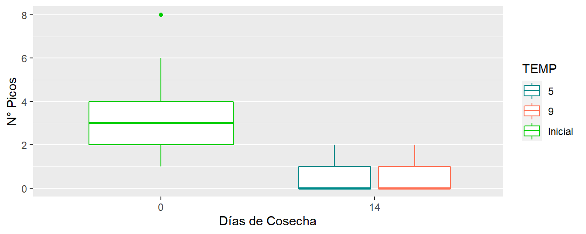